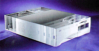

|  |
|
AST FlexChassis
AST® has designed a new FlexChassis which allows easy access to the inside
of your computer with just a push of a button! This tool-less entry chassis, is also the industry's first NIX design,
allowing the motherboard to slide out of the chassis with the flip of a lever.
AST's new innovative AST-FlexChassis design will dramatically reduce the time it takes to upgrade and
service your computer, making system maintenance a snap. The six major components: hard drives, floppy drives,
RAM, CPU, CD-ROM and Video RAM have been located to provide optimum accessibility.
Upgrading and servicing your Bravo system has never been easier, there's even a no touch zone on the motherboard,
allowing space for full length PCI & ISA
cards.
Other enhancements provided by the AST-FlexChassis design are: improved thermal characteristics, more rear panel
1/0 connectors, and support for tall memory modules.
|
| |
| |
|
System Noise Reduction (SNR)
In 1993, AST pioneered the energy-managed "Green PC" technology, bringing the first environmentally
friendly PC to the world. Today, AST is breaking more new ground, by fighting the newest type of environmental
concern - "white noise" pollution.
AST first introduced this technology in Europe in 1996, based on the great response it received, AST's System
Noise Reduction (SNR) technology is now being made available worldwide. As systems grow more powerful with
higher and higher MHz ratings, the cooling requirements and accompanying noise levels rise proportionately.
ASTs SNR technology addresses this cooling problem by incorporating a thermistor, which controls the variable-speed
fan in the power supply. When the system temperature increases, the fan speed increases providing maximum cooling
yet generating minimal noise. The noise level that the user perceives is also affected by fan and vent location,
which have been designed for quiet operation coupled with maximum cooling.**
Overall system noise on our Bravo MS desktops is reduced from 30.7dB to 27.8 dB - a 71 % decrease!
** available with desktop systems only
|
|
| |
|
Intel 430TX PCI Set and Max Technology
The Intel 430TX PCIset provides better system integration between components and the core logic, thereby providing
system performance gains of up to 15% from previous core logic chipsets. This core logic also enables advanced
technology such as SDRAM, ACPI, UltraDMA-33,
and MMX technology.
MMX technology uses high performance Single Instruction, Multiple Data (SIMD) technology and brings 57 new instructions
to the processor that allow applications to achieve a new level of performance.
MMX technology operates at 64-bits, Intel's general-purpose registers have only 32-bits, and is designed to
enhance the performance of a variety of multimedia and communications applications. Software developers can use
MMX technology to realize faster video frame rates, allowing for smoother, more realistic video.
MMX technology will also make advanced applications such as video conferencing, previously requiring expensive
hardware, a much more practical business solution for today's PC.
|
|
| |
|
UltraDMA-33 With S.M.A.R.T Drive Technology
UltraDMA- 33 represents the latest evolution of IDE hard drive technology. The burst transfer rate doubled from
16.7 MB/s to 33 MB/s bringing the effective transfer rate of the system's bus and a drive's internal data rate
into balance.
Cyclical Redundancy Checking (CRC) has also been added, providing an increase in data integrity. Self-Monitoring,
Analysis and Reporting Technology (S.M.A.R.T) monitors the hard drive activity to proactively indicate a potential
failure. For example, if your hard drive's read/write errors increase dramatically during use, the S.M.A.R.T technology
will alert a system administrator of a potential failure allowing IS departments to resolve problems before they
even occur!
System downtime, productivity loss, and even loss of valuable data can be prevented through the combined use
of S.M.A.R.T drives and Intel LANDesk software.
|
| |
| |
|
Synchronous Dynamic RAM (SDRAM)
SDRAM provides the highest memory bandwidth available on the market today to support enhanced media-rich performance
and reduced memory access time. Coupled with Intel's new 430TX core logic, it provides a 2% performance improvement
over EDO memory. In addition, the Bravo MS has been designed so users can mix
and match EDO and SDRAM memory increasing flexibility.
|